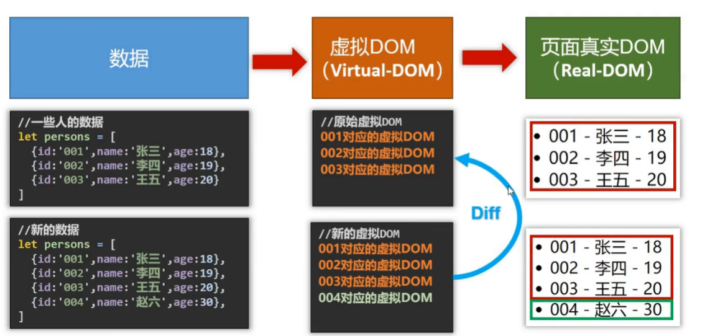
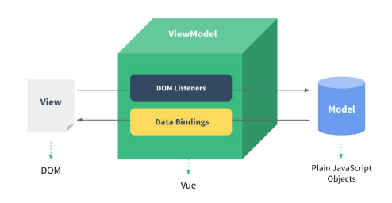
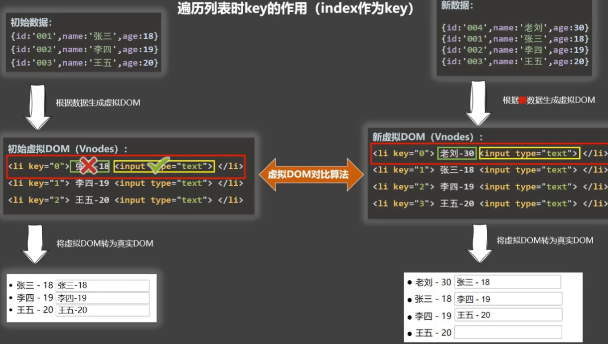
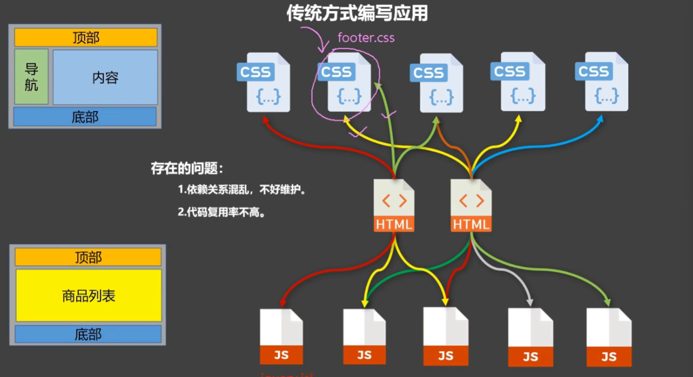
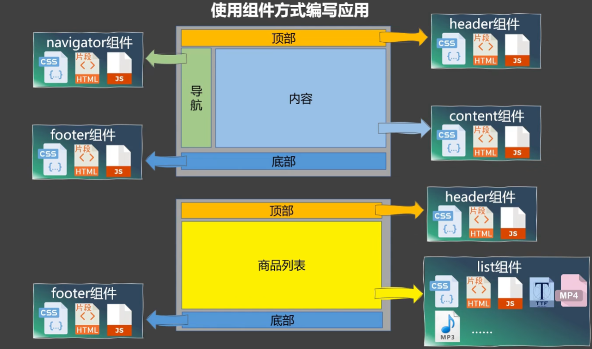
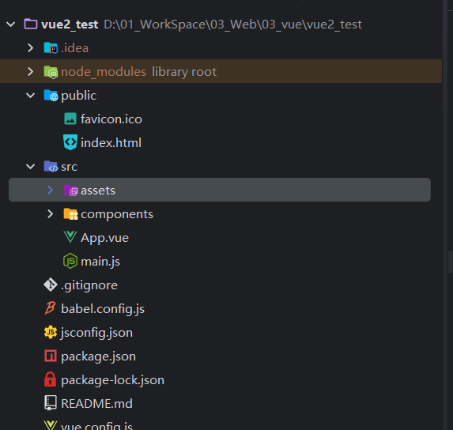
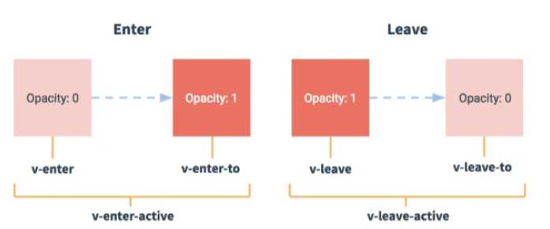
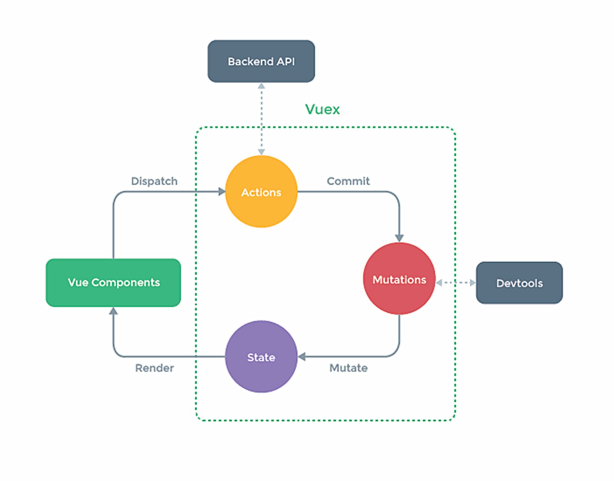

vue2
🤡：其实我是拒绝学习 vue 2的，但是实习项目的前端是 vue 2，hhh...
完结 vue2，好了，我承认以前我就是🤡，不学 vue2，怎么学好 vue3，啊，我问问，我又不是没学过 vue3，我就问问我自己，学懂了吗？？？？知道组件配置 data为啥要有函数返回对象吗？知道吗？感谢尚硅谷！
vue 2 基础
vue2 介绍
好吧，你要问什么是 vue，它是一个 “渐近式” 的 js 框架，至于怎么渐近了，只可意会，不可言传啊。（根据业务复杂度，一点点地把 Vue 的功能往项目里加。这就是“渐进”。）
它的两个特性分别为声明式 + 响应式。
声明式：Vue.js 的核心是一个允许采用简洁的模板语法来声明式地将数据渲染进 DOM 的系统：
响应式：数据变化 -> 视图自动更新。

vue2 快速开始
先导入 vue.js 依赖，之后便可以创建 vue 实例了。
Vue.config.productionTip = false
vm = new Vue({
el: '#root',
data: {
msg: 'hello world'
}
})
vue2 MVVM 模型
Vue 并没有完全遵循标准的 MVVM，但受其启发。它通过 ViewModel 实现了数据与视图的“自动同步”。

-
Model (模型)：后端传递的 JS 对象，即
data函数返回的数据。 -
View (视图)：用户看到的页面，即
template转化为的 DOM。 -
ViewModel (视图模型)：这是 Vue 的核心，它是连接 Model 和 View 的桥梁（Vue 实例）。
ViewModel 内部主要做了两件事：
Data Bindings (数据绑定)：当 Model 发生改变，ViewModel 监听到变化，自动更新 View。
DOM Listeners (DOM 监听)：当用户在 View 上操作（如输入文本），ViewModel 监听到事件，自动修改 Model。
vue2 数据代理
object.defineProperty
这是实现数据劫持和代理的 API。就是 java 的反射，在运行时操作对象。
let number = 18;
let person = { name: '张三' };
Object.defineProperty(person, 'age', {
value: 18, // 初始值
enumerable: true, // 控制属性是否可以枚举（遍历），默认 false
writable: true, // 控制属性是否可以被修改，默认 false
configurable: true,// 控制属性是否可以被删除，默认 false
// 【核心：高级读写控制】
get() {
console.log('有人读取了 age 属性');
return number;
},
set(value) {
console.log('有人修改了 age 属性，值为：', value);
number = value;
}
});
何为数据代理
通过一个对象代理对另一个对象（通常是隐藏的）中属性的操作（读/写）。下面是一个经典的数据代理对象，proxy 全权代理了 obj1 的 x, y 属性。
let obj1 = {
"x":100,
"y":200
}
let proxy = {}
for (let key in obj1){
Object.defineProperty(proxy, key, {
get(){
return obj1[key]
},
set(newValue){
obj1[key] = newValue
}
})
}
console.log(proxy.x)
Vue 中的数据代理
在 Vue 2 中，数据代理专门指：通过 vm 对象来代理 data 对象中属性的操作。
当我们去初始化一个 Vue 实例的时候，Vue 做了两件事情：
-
加工数据：把传进去的
data存成vm._data，并对其进行响应式处理（添加 getter/setter）。 -
实施代理：遍历
_data中的 key，通过Object.defineProperty把它们统统挂载到vm实例上。
// 假设 vm 是 Vue 实例，data 是你配置的那个对象
function makeProxy(vm, data) {
Object.keys(data).forEach(key => {
Object.defineProperty(vm, key, {
get() {
return data[key]; // 访问 this.msg 实际返回 this._data.msg
},
set(newVal) {
data[key] = newVal; // 修改 this.msg 实际修改的是 this._data.msg
}
});
});
}
vue2 监听属性的原理
Observer (监听器)：通过 Object.defineProperty 将数据对象的属性转换成 getter/setter。这是“劫持”数据的开始。
Dep (Dependency，依赖)：它是每个属性的“管家”。当 getter 被触发时，它负责把“谁用到了这个数据”记录下来（收集依赖）。
Watcher (订阅者/观察者)：它是连接数据和视图的桥梁。对于视图渲染，Vue 有一个专门的 Render Watcher。
Vue 2 的响应式本质是数据驱动。它通过 Object.defineProperty 将每个数据变成一个带有触发器的“钩子”，一旦数据被写入，这个钩子就会强行触发组件的重新渲染逻辑。
所以，如果想在程序运行时动态的添加响应式数据，对于对象来说，可以用 Vue.set(target, key, value) | vue.$set，对于数组来说，一定要用那七个 vue 提供的方法（对数组原始方法的包裹）：push、pop、shift、unshift、splice... ，并且要注意，不能直接向 vm 示例或者是 vm 的根数据 _data 添加响应式数据。
vue2 事件处理
ue 2 的事件处理非常直观，核心在于 v-on 指令（简写为 @）。它不仅能绑定原生 DOM 事件，还能处理自定义组件事件。
基础绑定
使用 v-on:click="methodName" 或 @click="methodName"。
⭐默认传参：如果不传参，默认第一个参数是原生 event 对象。
⭐显式传参：如 果需要传自定义参数，同时又需要 event 对象，使用 $event 占位符。
<button @click="showInfo">点我</button>
<button @click="showInfo(666, $event)">点我</button>
常用事件
鼠标/点击事件 (Mouse Events)
@click：单击。最常用。
@dblclick：双击。
@contextmenu：右键菜单。配合 .prevent 可以自定义右键菜单。
@mousedown / @mouseup：鼠标按下/抬起。常用于实现拖拽功能。
@mouseenter / @mouseleave：鼠标移入/移出（不冒泡，比 mouseover 更稳定）。
键盘事件 (Keyboard Events)
@keyup：按键抬起（最常用，因为此时输入框内容已更新）。
@keydown：按键按下。（tab，ctrl这些比较特殊）
键盘事件修饰符：enter，esc，delete，tab（配合 down 使用），其他按键用它的名字，多干单词分割开来，用 - 连接，比如 caps-lock，或者直接 keyup.键码，或者自定义别名，但 这两种方式不被推荐。
@keyup.enter
@keyup.13
@keyup.ctrl.y
表单/输入事件 (Form Events)
@input：输入框内容即时变化（每打一个字都触发）。v-model 的本质就是 @input。
@change：失去焦点且内容发生变化时才触发。
@focus / @blur：获得焦点/失去焦点。常用于搜索框高亮或表单验证。
@submit：表单提交。必配 .prevent 阻止页面跳转。
滚轮与滚动事件 (Scroll Events)
@scroll：滚动条滚动。
@wheel：鼠标滚轮滚动（注意：即使滚动条到底了，滚轮依然可以触发）。
vue2 事件修饰符
Vue 提供了一系列修饰符来处理常见的 DOM 事件逻辑，避免在函数内部写 e.preventDefault()。
注意：修饰符可以链式调用，例如 @click.stop.prevent="handle"。
| 修饰符 | 作用 | 常用场景 |
|---|---|---|
.stop |
阻止事件冒泡 | 嵌套点击，只触发子元素 |
.prevent |
阻止默认行为 | 提交表单不刷新页面、a 标签不跳转 |
.once |
事件只触发一次 | 按钮提交、初始化逻辑 |
.capture |
使用事件捕获模式 | 先触发外层，后触发内层 |
.self |
只有 event.target 是当前元素才触发 |
忽略冒泡过来的事件 |
.passive |
立即执行默认行为，不等待事件回调 | 优化移动端滚动性能 |
vue2 计算属性
如果模板中写太多的逻辑（如 {{ firstName + '-' + lastName }}），会导致模板臃肿、难以维护。而此时我们可以用到计算属性：它依赖的属性发生变化时，才会重新计算。如果依赖没变，多次访问会立即返回之前的计算结果，而不执行函数。
当你只需要读取值，不需要修改它时：
computed: {
fullName() {
// 这里的 this 指向 vm 实例
return this.firstName + '-' + this.lastName;
}
}
如果你需要修改计算属性的值（例如点击按钮修改 fullName），则需要配置 set：
computed: {
fullName: {
// 当有人读取 fullName 时调用或者所依赖数据发生改变时
get() {
return this.firsstName + '-' + this.lastName;
},
// 当有人修改 fullName 时调用
set(value) {
const names = value.split('-');
this.firstName = names[0];
this.lastName = names[1];
}
}
}
// 简写：
computed:{
fullName(){
return this.firstName + this.lastName
}
}
vue2 监视属性
侦听属性 watch 是 Vue 2 中用于响应数据变化的“观察者”。它的核心定位是：当指定数据变化时，执行预定义的逻辑（通常是异步或开销较大的操作）。
简写形式：
watch: {
// 监视 isHot 属性
isHot(newValue, oldValue) {
console.log('数据变了', newValue, oldValue);
}
}
当你需要深度监视或页面一加载就执行时：
watch: {
info: {
immediate: true, // 初始化时立即执行一次 handler
deep: true, // 深度监视：对象内部属性改变也会触发
handler(newValue, oldValue) {
console.log('info 改变了');
}
}
}
或者动态的添加：
vm.$watch('isHot', {
handler(newValue, oldValue) { /* 逻辑 */ }
})
vm.$watch('ishot', function(n, o){/* 逻辑 */})
vue2 计算属性和监视属性的区别
| 特性 | Computed (计算属性) | Watch (侦听属性) |
|---|---|---|
| 侧重点 | 得到一个新结果（重在结果） | 执行副作用逻辑（重在过程） |
| 缓存 | 有缓存，依赖不变不计算 | 无缓存，变化就触发 |
| 异步 | 不支持异步（无法 return 异步结果） | 支持异步（如发送请求、定时器） |
| 调用 | 像属性一样使用，不加 () |
监听已存在的属性 |
绑定 class 样式
动态绑定 class 是 Vue 2 实现“响应式 UI”的直接手段。它允许根据数据状态，自动切换 CSS 类名，彻底告别频繁的 DOM 操作。
Vue 的 :class (即 v-bind:class) 支持三种主要写法，根据场景选择：
| 模式 | 语法 | 适用场景 |
|---|---|---|
| 字符串写法 | :class = "temp" |
适用于类名完全由数据变量决定 |
| 对象语法 | :class="{ class1: false|true}" |
适用于根据条件动态决定是否开启某一组样式 |
| 数组语法 | :class="classArr":class="['a','b','c']" |
个数确定、类名确定，但用不用不确定 |
| 三元运算符 | :class="isActive ? 'active' : ''" |
简单的二选一逻辑。 |
绑定 style 样式
绑定 style (内联样式) 主要用于处理动态数值（如拖拽坐标、进度条宽度、字体大小），这是 class 无法做到的。
:style (即 v-bind:style) 同样支持对象和数组，但写法更接近 JS 操作 DOM 的 style 属性。
| 模式 | 语法示例 | 适用场景 |
|---|---|---|
| 对象语法 | :style="{ fontSize: fSize + 'px' }" |
最推荐。动态修改特定 CSS 属性。 |
| 数组语法 | :style="[baseStyle, overStyle]" |
合并多个样式对象。**** |
vue2 核心指令
数据绑定
v-model 不是黑魔法，它其实是两个指令的组合：1）v-bind:value="xxx"：把数据绑定到视图。2）v-on:input="xxx = $event.target.value"：监听输入，实时更新数据。
（1）对于可以输入的表单项，v-model 默认收集的就是 value 值，没有问题。
（2）对于单选框、复选框这类不能输入的，必须手动写 value 属性，并且对于多选框，双向绑定的那个数据必须是一个数组，不然默认收集的就是 checked。当然，有些时候也会需要收集这个 checked。
（3）对于下拉框，v-model 绑定在 <select> 标签上，收集的是选中的 <option> 的 value。
v-model 的修饰符
.number：自动将用户的输入值转为 Number 类型（默认输入框收集的都是字符串）。
.trim：自动过滤用户输入的首尾空格。
.lazy：不实时更新，失去焦点 (blur) 时才更新。
条件渲染
v-show
机制：CSS 属性控制（本质是 display: none）。
<h2 v-show='true | false | 表达式 | 响应式数据'>
切换频率较高。由于不需要频繁操作 DOM，切换性能极佳，响应速度快。
v-if
机制：DOM 节点的创建与销毁。
<h2 v-if='true | false | 表达式 | 响应式数据'>
切换频率较 低。虽然初次渲染开销小，但切换时的 DOM 操作成本高。
不要在 v-if 后面接乱七八糟的标签：v-else 或 v-else-if 必须与 v-if 紧紧挨着写，中间不能有任何其他元素干扰，否则 Vue 会报错找不到对应的 v-if。
列表渲染
基础语法
v-for 是 Vue 2 处理列表数据的核心指令。它的本质就是“遍历”，但在处理 DOM 更新时，它的性能表现完全取决于你是否正确使用了 key。
<li v-for="(item, index) in list" :key="index">
{{ index }} - {{ item.name }}
</li>
<li v-for="(value, key, index) in obj">
{{ index }} - {{ key }}: {{ value }}
</li>
Key 的作用
key 是虚拟 DOM 对象的标识。当数据发生变化时，Vue 会根据【新数据】生成【新的虚拟 DOM】，随后对比【新虚拟 DOM】与【旧虚拟 DOM】。
对比规则：
旧虚拟 DOM 中找到了与新虚拟 DOM 相同的 key：
（1）若虚拟 DOM 中内容没变，直接使用之前的真实 DOM。
（2）若虚拟 DOM 中内容变了，则生成新的真实 DOM，随后替换掉页面中之前的真实 DOM。
旧虚拟 DOM 中未找到与新虚拟 DOM 相同的 key：
（1）创建新的真实 DOM，随后渲染到页面。

用 index 作为 key 可能会引发的问题
破坏顺序操作：若对数据进行逆序添加、逆序删除等破坏顺序的操作，会产生没有必要的真实 DOM 更新，虽然界面效果没问题，但效率较低。
输入类 DOM：如果结构中还包含输入类的 DOM，会产生错误 DOM 更新，导致界面出现问题。
列表过滤
列表过滤通过计算属性可以轻松的实现，在这个基础上加排序等逻辑也很简单。
其核心思路是：原数组不动，通过 computed 计算属性生成一个新的“过滤后数组”，模板中遍历这个新数组。
const vm = new Vue({
data: {
keyword:"",
persons: [
{id: "1", name: "张三", age: 11},
{id: "2", name: "李四", age: 12},
{id: "3", name: "王五", age: 13}
],
},
computed:{
filPersons(){
return this.persons.filter(p=>{
return p.name.indexOf(this.keyword) !== -1
})
}
}
})
vm.$mount("#app")
过滤器
过滤器 (Filters) 是 Vue 2 中用于格式化文本的专属工具。它们的核心作用是：“不改变原始数据，只改变最终显示的样子。”
过滤器通过管道符 | 将数据传输给处理函数。{{ message | filterA | filterB }}
局部过滤器：
filters: {
// val 是传入的数据，format 是参数
myFilter(val, format = 'YYYY-MM-DD') {
return dayjs(val).format(format); // 假设用了 dayjs 库
}
}
全局过滤器：
Vue.filter('myFilter', function(val) {
return val.slice(0, 4) + '...';
});
请注意：Vue 3 已经移除了过滤器语法。 官方建议在 Vue 3 中直接使用 方法 (Methods) 或 计算属性 (Computed) 来处理格式化逻辑，这样逻辑更清晰，也更易于维护。
vue 内置指令总结
1、v-bind：数据单向绑定。将 Vue 实例的数据绑定到 HTML 属性上（如 src, href, class, style）。，简写为 :=js变量
2、v-model：数据双向绑定。通常用于表单元素（input, textarea, select），实现视图与数据的同步更新。
3、v-on：事件绑定。监听 DOM 事件并触发对应的 JavaScript 逻辑。简写为：@事件名
4、v-if /v-else-if / v-else：条件渲染（动态控制 DOM 的存在与否）。
5、v-show：无论条件真假，DOM 都会被渲染，只是通过 CSS 的 display: none 来控制可见性。适用于频繁切换的场景。
6、v-for：列表渲染。基于一个数组或对象来重复渲染元素。必须配合 :key 使用（通常绑定唯一 ID），以便 Vue 的 Diff 算法能高效更新虚拟 DOM。
7、v-text：更新元素的 textContent。
8、更新元素的 innerHTML。
9、v-once：只渲染一次。组件或元素在初次渲染后，即使数据变化，也不会再触发更新。可用于性能优化。
10、v-html：更新元素的 innerHTML。慎用！ 容易引发 XSS 攻击。只在信任的内容上使用，绝对不要用在用户提交的内容上。
11、v-cloak：防止闪烁,这个标签属性只在 vue 没接管当前模板时候生效。配合 CSS [v-cloak] { display: none; } 使用。在 Vue 实例挂载完成前，保持元素隐藏，避免用户看到未编译的 {{ message }} 标签。
12、v-pre：跳过其所在节点的解析过程，也就是 vue 不去解析这些标签了，适合那些没有用到任何 vue 管理的成员或者vue指令的标签。
vue 自定义指令
演示：自定义 v-big 指令，把属性值放大十倍
比较方便的写法就是直接写成一个函数，其实简写就是只写了 bind 和 update，而忽略了 insert
directives:{
// 调用时机：
// 1. 指令与元素绑定成功时
// 2. 指令所在的模板被重写解析时
big(element, binding){ // element:当前真实dom元素, binding:绑定的参数
console.log(element, binding.value)
element.innerHTML = binding.value * 10
}
}
自定义 v-fbind 指令，让和它绑定的 input 标签自动获得焦点，这个就得写成一个对象了，然后这个对象下面有不同的函数，也就是在不同的时机执行不同的函数！
fbind:{
bind(element, binding){
element.value = binding.value
},
inserted(element, binding){
element.focus()
},
update(element, binding){
element.value = binding.value
}
}
总结：
1）自定义指令的名字不要出现大写字母，自定义指令如果有多个字母，用 - 分割，同时在 directives 里面用 '' 包裹
// 自定义 v-big-number
directives:{
'big-number'(){
pass
}
}
2）指令回调里面的 this 是什么：是 window，而不是 vue 示例。
3）我们在 directives 里面写的指令是局部指令，其他 vue 示例不能用。
vue 2 配置选项总结
vue2 标签属性
ref
之前学的都是“数据驱动视图”（数据变，页面自动变），这很优雅。但现实开发中，总有些“刺头”场景，比如：手动让输入框聚焦、获取某个元素的宽高、或者直接调用第三方库（比如 ECharts 或高德地图）。这时候，Vue 的声明式渲染就“够不着”了，你需要 ref 来直接操作 DOM。
ref 被用来给元素或子组件注册引用信息。
在 HTML 标签上：获取的是真实 DOM 元素。
在组件标签上：获取的是组件实例对象 (vc)。
<h2 ref="title">Hello World</h2>
<School ref="sch">< /School>
mounted() {
// 获取真实 DOM
console.log(this.$refs.title);
// 获取组件实例 (可以调用组件里的方法或访问数据)
console.log(this.$refs.sch);
}
scoped
CSS 本质上是全局的。你在一个组件里写的 div { color: red; }，会像病毒一样扩散到整个页面。scoped 属性就是 Vue 为了解决这个“CSS 污染”问题，给组件加的最后一道防线
其实原理就是：Vue 会给组件里所有的 DOM 元素（模板里的 div、h2 等）自动添加一个唯一的自定义数据属性（例如 data-v-472cff63）。然后它会把的 CSS 选择器自动加上这个属性限定。
.box { color: red; } --> .box[data-v-472cff63] { color: red; }
vue2 生命周期
[Vue 实例 — Vue.js](https://v2.cn.vuejs.org/v2/guide/instance.html#创建一个-Vue-实例)
一切一切的开始，都是 new Vue()
（1）最开始，要进行生命周期、事件的初始化，但数据代理还没开始！
beforeCreate()：无法拿到 vm 的数据和方法等。
（2）第二步，是数据监测，数据代理，换人话就是给对象的属性赋值。
created()：可以拿到 vm 的数据和方法
（3） 第三步，判断当前 vue 是否配置了 el 选项：
是：直接走下面的流程
否：等待 vm.$mount() 被调用才往下走
（4）看看当前 vue 示例配置 template 选项没
是：解析当前template
否：把当前 el's outerHTML 当作是 template，然后去解析
before_mount()：页面都是未经过 vue 编译的 dom 结构。此时虚拟 dom 已经生成，但还没有生成真实 dom 并放到页面上，所以在这个时候对所有dom元素的操作最终都不奏效。
（5）将内存中的虚拟 dom 转为 真实 dom 并插入页面（本质其实就是替换了当前 el 对于的那个元素下的 dom。
mounted()：页面呈现的都是经过 vue 编译的 dom 结构。至此，初始化过程结束了。
（6）当数据发生变化后，vue 就会调用 beforeUpdate()，此时数据是新的，但页面中的数据还是旧的，因为 vue 还没重新解析模板。
beforeUpdate()
（7） 根据新数据，生成新的虚拟 dom，随后与旧的虚拟 dom 进行比较，完成最终的页面更新。
updated()：数据和页面同步了。
（8）不想要了，直接调用 vm.$destroy，会触发钩子：beforeDestroy 和 destroyed，注意，在 beforeDestroy 里边操作修改数据，不会触发 vue 重新解析模板了。
| 阶段 | 钩子 (Hook) | 数据访问情况 | DOM 情况 |
|---|---|---|---|
| 初始化 | beforeCreate |
无数据/方法 | 无 |
created |
有数据/方法 | 无 | |
| 挂载 | beforeMount |
有数据 | 虚拟 DOM 已生成 (不可见) |
mounted |
有数据 | 真实 DOM 已渲染 | |
| 更新 | beforeUpdate |
数据新，DOM 旧 | 待更新 |
updated |
数据新，DOM 新 | 已同步 | |
| 销毁 | beforeDestroy |
可访问 | 可访问 (即将销毁) |
destroyed |
不可访问 | 已销毁 |
vue 组件化编程
什么是组件？
组件就是实现应用中局部功能代码和资源的集合。（html，css，js）
为什么要用组件式编程
传统编程方式
1、依赖关系混乱，不好维护。
2、代码复用率不高

组件编程方式
1、组件复用非常非常方便！！！

非单文件组件
一个文件中包含 n 个组件：将组件的所有逻辑（HTML 模板、JavaScript 逻辑、CSS 样式）分散写在一个 HTML 文件里，或者通过全局 JS 变量注册。
<script>
Vue.config.productionTip = false
// 组件不能去配置 el 配置项，哪里需要方到哪里
// 组件的 data 必须写出普通函数，在函数里返回对象，因为组件会被多个地方使用，不用函数的话会造成数据混乱
// 1. 创建组件
const school = Vue.extend({
data(){
return {
name:"北京大学",
address:"北京"
}
},
template:`
<div>
<h2>{{name}}</h2>
<h2>{{address}}</h2>
</div>
`
})
const student = Vue.extend({
data(){
return {
name:"张三",
age:18
}
},
template:`
<div>
<h2>{{name}}</h2>
<h2>{{age}}</h2>
</div>
`
})
// 2. 注册组件：局部注册
const vm = new Vue({
el:"#root",
// 全新配置项
components:{
school,
student
}
})
// 3. 使用组件
<div id="root">
<student></student>
<school></school>
</div>
全局注册组件！！
Vue.component("组件名",组件变量)
单文件组件
这是 Vue 工程化的核心，也是目前 99% 的 Vue 项目采用的方式：将一个组件的所有内容封装在一个以 .vue 为后缀的文件中。
<template>
</template>
<script>
export default{ // 这里省略了 Vue.extend()，采用 js 默认导出
}
</script>
<style>
</style>
组件的注意事项
1、如果组件名是一个单词，那么可以纯小写，也可以首字母大写。
2、如果组件名是多个单词组成的，推荐写法：'my-school'，或者 MySchool。但要注意：这样必须在脚手架环境，不然它会找 myscholl，就会报错。
3、可以在定义组件的时候就去指定名字：name:"test"。开发者工具里就会变成这个名字，但注意，注册时候什么名字在使用的时候就要用什么标签。
4、使用组件时如果想用单标签，必须在脚手架环境。
5、在脚手架环境下，创建组件时可以直接：
const c1 = {
}
vueComponent
1、组件的本质就是一个构造函数。是通过 Vue.extend 生成的。
2、当我们写下 <School/> 标签时，Vue 的内部运行机制是这样的：它会执行 new VueComponent(options)，生成该组件的一个实例对象。
3、特别注意：每次调用 Vue.extend() 都会产生一个新的 vueComponent。
4、关于this的指向：
1）.组件配置中：data、method、watch、computed的this均是当前 VueComponent 实例对象。
2）.new Vue(options)配置中：data、method、watch、computed的this都是当前 Vue 实例，也就是 vm。
一个重要的内置关系
在 JavaScript 中，当你创建一个对象（实例）时，你不需要把所有的方法和属性都塞进这个对象里（那样太占内存了）。相反，你只需要把这些共用的方法放在一个“藏宝阁”（即原型对象）里，然后让所有创建出来的对象都连上一条“线”，指向这个藏宝阁。
其实原型就是为了实现“内存复用”和“动态继承”设计的一个链式查找机制。
实例对象.__proto__ === 构造函数.prototype
而在 vue 中，一个重要的内置关系：
VueComponent.prototype.__proto__ === Vue.prototype
这是面试最爱考的点：为什么组件实例能访问到 this.$mount、this.$on 等 Vue 的原型方法？
vue2 脚手架
1、 全局安装 @vue/cli：npm install @vue/cli
2、之后，直接 vue create xxxx 就能创建脚手架了
3、启动项目：npm run serve
vue/cli 脚手架创建的项目目录如下：

main.js
main.js：render: h => h()，非常重要！默认传的参数是一个函数：createElement，原因是在脚手架环境下，es6 模块化语法导入的 vue 是残缺版 vue，不包含模板解析器，而 template 标签的解析交给了："vue-template-compiler": "^2.6.14"。
1）vue.js 是完全版的 vue，包含核心功能 + 模板解析器
2）vue.runtime.xxx.js 是运行版 vue，只包含核心功能，没有模板解析器
render(createElement){
return createElement(App) // js变量
return createElement('h1', 'hahahaha')
}
import Vue from 'vue' // 这里引入的是一个残缺版的 vue
import App from './App.vue'
Vue.config.productionTip = false
new Vue({
render: h => h(App), // 所以这里不能配置 template！！也不能通过 components 去注册组件 app 组件。
}).$mount('#app')
public/index.html
<!DOCTYPE html>
<html lang="">
<head>
<meta charset="utf-8">
<!--针对 ie 浏览器的特殊配置-->
<meta http-equiv="X-UA-Compatible" content="IE=edge">
<!-- 开始移动端的理想视口，其实就是适配页面-->
<meta name="viewport" content="width=device-width,initial-scale=1.0">
<!--<%= BASE_URL %>指的就是 public 路径-->
<link rel="icon" href="<%= BASE_URL %>favicon.ico">
<!--配置网页的标题-->
<title><%= htmlWebpackPlugin.options.title %></title>
</head>
<body>
<!--如果浏览器不支持 js,下面这个<noscript>中的元素就会被渲染-->
<noscript>
<strong>We're sorry but <%= htmlWebpackPlugin.options.title %> doesn't work properly without JavaScript enabled. Please enable it to continue.</strong>
</noscript>
<!--容器-->
<div id="app"></div>
<!-- built files will be auto injected -->
</body>
</html>
vue insepct > output.js
该命令可以看 webpack 的默认配置。
vue.config.js
vue.config.js 是一个可选的配置文件，如果项目的 (和 package.json 同级的) 根目录中存在这个文件，那么它会被 @vue/cli-service 自动加载。你也可以使用 package.json 中的 vue 字段，但是注意这种写法需要你严格遵照 JSON 的格式来写。
const { defineConfig } = require('@vue/cli-service')
// 采用 commonjs 的模块化
module.exports = defineConfig({
transpileDependencies: true,
lintOnSave: false
})
vue 可复用性
vue mixin
在 Vue 2 中，Mixin 是一种分发组件中可复用功能的极致方式。它的核心思想很简单：“把你定义好的一堆选项（data, methods, hooks），直接塞进组件里。”
定义 mixin.js
export const myMixin = {
data() { return { x: 100 } },
methods: {
showName() { alert(this.name) }
},
mounted() {
console.log('Mixin 的 mounted 被调用了');
}
}
使用 mixin
import { myMixin } from './mixin'
export default {
mixins: [myMixin], // 注入！
data() { return { name: '尚硅谷' } }
}
Mixin 最大的坑在于“冲突解决”。如果 Mixin 里的东西和组件里的东西撞车了，听谁的？
| 类型 | 冲突处理规则 |
|---|---|
| data / methods / computed | 组件优先。组件里的属性会覆盖 Mixin 里的属性。 |
| 生命周期钩子 (mounted, created等) | “叠加态”。两者都会执行，但 Mixin 的钩子会先于组件钩子执行。 |
vue 插件
插件通常用来为 Vue 添加全局功能。插件的功能范围没有严格的限制——一般有下面几种：
-
添加全局方法或者 property。如：vue-custom-element
-
添加全局资源：指令/过滤器/过渡等。如 vue-touch
-
通过全局混入来添加一些组件选项。如 vue-router
-
添加 Vue 实例方法，通过把它们添加到
Vue.prototype上实现。 -
一个库，提供自己的 API，同时提供上面提到的一个或多个功能。如 vue-router
总结，vue的插件本质来说就是个对象！！这个对象必须包含 install() 方法
自定义插件：Vue.js 的插件应该暴露一个 install 方法。这个方法的第一个参数是 Vue 构造器，第二个参数是一个可选的选项对象：
MyPlugin.install = function (Vue, options) {
// 1. 添加全局方法或 property
Vue.myGlobalMethod = function () {
// 逻辑...
}
// 2. 添加全局资源
Vue.directive('my-directive', {
bind (el, binding, vnode, oldVnode) {
// 逻辑...
}
...
})
// 3. 注入组件选项
Vue.mixin({
created: function () {
// 逻辑...
}
...
})
// 4. 添加实例方法
Vue.prototype.$myMethod = function (methodOptions) {
// 逻辑...
}
}
使用插件：通过全局方法 Vue.use() 使用插件。它需要在你调用 new Vue() 启动应用之前完成：
// 调用 `MyPlugin.install(Vue)`
Vue.use(MyPlugin)
Vue.use(MyPlugin, { someOption: true })
new Vue({
// ...组件选项
})
vue 组件之间的参数传递
props 属性
props 是 Vue 组件通信中，父传子最标准、最核心的桥梁。它是单向数据流的体现。
1）子组件在接受 props 参数时，从简单到复杂有三种写法。
2）子组件不要修改当前父组件穿进来的参数，谢谢您嘞。
3）父组件在传递 props 属性时，不用 v-bind，就是字符串，用了就是 js 表达式的结果，可以是字符串、数字...
4）子组件给父组件传参，本质还是父组件偷偷给子组件提前传了一个函数，子组件传参其实就是调用这个函数。
// 父组件 app
<School k1 = '1' k2 = '2'></School>
// 子组件简单接收父组件参数
props:['k1', 'k2']
// 子组件限制接收参数的类型
props:{
k1: String,
k2: Number,
...
}
// 更加完整的写法
props:{
k1:{
type:String,
required:false,
default(){
return "111"
}
},
k2:{
type:String,
required:false,
default(){
return "222"
}
}
}
// 自定义校验逻辑
score: {
type: Number,
validator(value) {
return value >= 0 && value <= 100
}
}
vue 自定义事件
自定义事件是 子组件给父组件传递数据 的主要方式。但是自定义组件还是无法实现兄弟之间直接传参数。
// 直接在组件标签上绑定自定义事件
<School v-on:my-event="callback"/>
// 如果想绑定原生事件，需要 .native 修饰
<School v-on:click.native="callback"/>
// 拿到 vc 示例，绑定事件
this.$refs.xxx.$on("my-event") // $once()
// 这个事件给谁绑定，谁触发
this.$emit('my-event', args1, args2, args...)
| 绑定方式 | 语法示例 | 适用场景 |
|---|---|---|
| 声明式绑定 | <School @my-event="callback"/> |
最常用，结构清晰，Vue 自动管理事件卸载。 |
| 编程式绑定 | this.$refs.xxx.$on('my-event', callback) |
适用于需要动态绑定、逻辑复杂或需要异步处理的场景。 |
| 原生事件绑定 | <School @click.native="callback"/> |
当你想在组件根标签上直接监听原生 DOM 事件（如 click）时。 |
触发事件：在子组件中使用 this.$emit('event-name', data)，触发该事件并传递参数。
解绑事件：使用 this.$off('event-name')，防止事件逻辑冗余。
一次性触发：使用 .once 修饰符或 $once 方法，确保回调函数只执行一次。
回调函数的 this 指向： 如果你通过 this.$refs.xxx.$on 绑定事件，回调函数千万不要直接写普通函数，否则 this 会丢失或指向错误（指的是触发事件的vc示例）。务必将其写在 methods 中或使用箭头函数。（当前组件的 vc 示例）
.native 修饰符： 默认情况下，你给组件绑定的事件（如 @click）会被 Vue 当作自定义事件处理。如果不加 .native，点击事件根本不会触发（除非子组件内部手动 $emit('click')）。.native 直接绕过组件系统，绑定到子组件的根 DOM 元素上。
全局事件总线
如果说 props 是父子的“面对面交流”，自定义事件是“子对父的汇报”，那么全局事件总线 (Global Event Bus) 就是一个“全场广播系统”。
要实现全局总线，你需要一个所有组件都能访问到的对象（原型属性可以实现），且这个对象必须具备 $on（绑定）、$emit（触发）和 $off（解绑）这些方法。在 Vue 2 中，最简单的做法就是把 Vue 的原型（或者根实例）当作这个桥梁。
new Vue({
beforeCreate() {
// 将当前根实例挂载到原型上，命名为 $bus
// 这样，所有组件实例都能通过 this.$bus 访问到这个“总线”
Vue.prototype.$bus = this
},
render: h => h(App)
}).$mount('#app')
在任何组件，都可以通过 this.__proto__.$bus 去拿到 vue 示例
this.__proto__.$bus
广播与监听具体操作
接收方 (Subscriber)：通过 $on 监听事件
// School.vue
mounted() {
// 绑定事件，接收数据
this.$bus.$on('send-data', (data) => {
console.log('接收到了数据：', data);
});
},
beforeDestroy() {
// 【关键】组件销毁前，解绑该事件，防止内存泄漏！
this.$bus.$off('send-data');
}
发送方
// Student.vue
methods: {
sendInfo() {
// 触发事件，发送数据
this.$bus.$emit('send-data', '我是学生传来的数据');
}
}
消息订阅与发布
虽然事件总线很方便，但在大型项目中，$bus 容易导致逻辑混乱且难以追踪。Pub/Sub 模式通过引入第三方库（最常用的是 pubsub-js），将通信逻辑从 Vue 的实例中完全解耦。
为什么用它？（对比 Event Bus）
-
彻底解耦：事件总线依赖于 Vue 原型对象，而
Pub/Sub依赖于外部库，与 Vue 实例生命周期脱钩。 -
避免
this困境：在使用事件总线时，你经常要担心this的指向问题（需要用箭头函数）。Pub/Sub的回调函数是独立的，不存在this指向丢失的问题。 -
语义更清晰：它明确分为了“订阅者”和“发布者”，代码可读性更强。
使用方法
安装第三方依赖
npm install pubsub-js
导入依赖
import PubSub from 'pubsub-js'
订阅消息
mounted() {
// 订阅一个名为 'hello' 的消息
// msgName: 消息名称, data: 传过来的数据
this.pid = PubSub.subscribe('hello', (msgName, data) => {
console.log('接收到消息：', msgName, data);
});
},
beforeDestroy() {
// 组件销毁前取消订阅
PubSub.unsubscribe(this.pid);
}
发布消息
methods: {
sendData() {
// 发布 'hello' 消息，并携带数据
PubSub.publish('hello', { name: '张三', age: 18 });
}
}
vue 过渡与动画
css 动画
CSS 动画并不神秘，它其实就是让网页的 CSS 属性在一段时间内平滑地发生变化。在 CSS 中，实现动画主要靠两个工具：transition (过渡) 和 animation (关键帧动画)。
简单过渡
这是最简单的动画，适用于“状态改变”的场景，比如按钮的颜色从蓝变红、侧边栏从隐藏到显示。
定义“从哪变到哪”，浏览器帮你算中间的过程。
.box {
width: 100px;
background-color: blue;
/* 核心：设置过渡 */
// all：监听所有熟悉变化
// 0.5s：动画持续时间
// easy-in-out：速度曲线（开始慢、中间快、结束慢）。
transition: all 0.5s ease-in-out;
}
.box:hover {
width: 200px;
background-color: red;
}
复杂动画
如果你想做一段自动播放的动画，比如一个球在屏幕上跳动，或者一个加载圈在无限旋转，transition 就无能为力了，这时需要 animation。
/* 1. 定义动画轨道 */
@keyframes my-move {
0% { transform: translateX(0); }
50% { transform: translateX(100px); }
100% { transform: translateX(0); }
}
/* 2. 绑定到元素上 */
.ball {
width: 50px;
height: 50px;
background: red;
/* 调用动画 */
// infinite: 让动画无限循环播放。
animation: my-move 2s infinite;
}
vue 中的 transition

在 Vue 中，不需要手动去操作 DOM 的 style，只需要利用 Vue 提供的 <transition> 组件，剩下的工作就是写 CSS。
transition 标签
当你把一个元素（或组件）放在 <transition> 标签里时，Vue 会自动监测它的“插入”和“移除”。
它会自动做两件事：
-
在插入/移除的瞬间，往元素上添加/移除特定的 CSS 类名。
-
如果没写
name属性，默认前缀就是v-；如果你写了<transition name="hello">，类名前缀就是hello-。
动画的“六部曲”
| 阶段 | 类名 | 作用 |
|---|---|---|
| 进入 (In) | v | (name)-enter |
进入的起点 (初始状态) |
v-enter-active |
进入的过程 (定义过渡时间、曲线) | |
v-enter-to |
进入的终点 (元素完全显示) | |
| 离开 (Out) | v-leave |
离开的起点 |
v-leave-active |
离开的过程 (定义过渡时间、曲线) | |
v-leave-to |
离开的终点 |
<transition name="fade">
<h1 v-show="isShow">你好！</h1>
</transition>
<style>
/* 进入的起点 & 离开的终点 */
.fade-enter, .fade-leave-to { opacity: 0; }
/* 进入的过程 & 离开的过程 */
.fade-enter-active, .fade-leave-active { transition: opacity 0.5s; }
/* 进入的终点 & 离开的起点 */
.fade-enter-to, .fade-leave { opacity: 1; }
</style>
transition-group
transition-group：如果你要操作的是一个列表（多个元素），必须用它，并且给每个元素加上唯一的 key。
<transition-group
appear
name="animate__animated animate__bounce"
enter-active-class="animate__swing"
leave-active-class="animate__backOutUp">
<h1 v-show="isShow" key="1">你好！</h1>
</transition-group>
集成第三方动画效果
安装依赖
npm install animate.css
第二步：引入
import 'animate.css'
绑定类名 (最关键)：不要试图用传统的 CSS 类名（fade-enter 等）去覆盖它，Vue 提供了专门的“钩子类名属性”来对接第三方库。
在 <transition> 组件上，使用 enter-active-class 和 leave-active-class 属性：
<transition-group
appear
name="animate__animated animate__bounce"
enter-active-class="animate__swing"
leave-active-class="animate__backOutUp">
<h1 v-show="isShow" key="1">你好，动画！</h1>
</transition-group>
vue 插槽
插槽可以理解为在组件的结构上预留的坑位，之后可以在组件标签里传递 dom | 组件 --> 这个坑位上。vue 的插槽有三种，分别为默认插槽，具名插槽，作用域插槽。插槽内可以包含任何模板代码，包括 HTML，甚至其它的组件。
默认插槽
// 在 test 组件下写
<slot></slot>
// 插入元素到插槽位置
<test>
(这里是要插入的元素)
</test>
具名插槽
如果想在一个组件下有多个插槽，那么必须要给这个插槽一个名字，不然在放的时候都不知道往那个插槽放！通俗讲就是给组件挖坑的时候会有多个坑，每个坑有自己的名字，不然其他人放的时候没法放！
在 vue 2.6，弃用了通过 slot = ‘xxx’ 去指定放在哪里，而是通过 v-slot: 插槽名 来指定。注意：这种语法只能写在 template 标签。
<div class="layout">
<header v-slot:header></header>
<main></main> <footer v-slot:footer></footer>
</div>
<Layout>
<h1 slot="header">这是头部</h1>
<p>这是主体内容</p>
<div slot="footer">这是底部</div>
</Layout>
作用域插槽
子组件的数据在子组件内部，但父组件想根据子组件的数据来决定怎么渲染。此时就可以使用作用域插槽实现：数据由子组件提供，但渲染方式由父组件决定。
<slot :games='games'></slot> // 这行其实就是把当前数据传递给了往这个插槽插入元素的那个组件
在其他组件拿到这个数据：必须通过 template + 属性
<GameList>
<template slot-scope="scopeData">
<h4 style="color:red">{{ scopeData.game.name }}</h4>
</template>
</GameList>
vuex
vuex 是什么？
vuex 是实现集中式状态（数据）管理的一个 vue 插件（在 vue3 中，是 pinia）,本质上，多个组件对共享数据的共同操作也算得上是组件之间的通信了。
vuex 工作原理
它是一个状态管理模式，你可以把它看作是所有组件共享的“中央大仓库”。无论组件层级多深，只要想用数据，直接从仓库拿；想改数据，按照规定流程改。

| 模块 | 职责 | 类比 |
|---|---|---|
| State | 存储所有共享数据 | 仓库里的货架 |
| Getters | 对 State 进行加工 (类似组件的 computed) | 质检部门 (只读) |
| Mutations | 修改 State 的唯一途径 (必须是同步) | 搬运工 (搬运必须有单据) |
| Actions | 处理业务逻辑 (可异步，如发 Axios 请求) | 业务经理 (下单/协调) |
| Modules | 将大仓库拆分为多个小仓库 | 分店管理 |
vuex 使用
注意，在 vue2 中，用 vuex 3版本，vue3 中用4 或者不用它。
npm install vuex@3
创建一个 store 对象：通常在 src/store/index.js
// 定义 vuex 的 store
import Vuex from 'vuex'
import Vue from 'vue'
Vue.use(Vuex) // 这里必须在new Vuex.Store之前使用
// 1. 准备一个actions：处理业务逻辑
const actions = {}
// 2. 创建一个mutations：处理数据
const mutations = {}
// 3. 创建一个state：保存数据
const state = {}
// 4. 创建一个store并且暴露
export default new Vuex.Store({
actions,
mutations,
state
})
在 main.js 使用 vuex 并且配置 store 属性
import Vue from 'vue'
import App from './App.vue'
import Vuex from 'vuex'
import store from '@/store/index'
Vue.config.productionTip = false
Vue.use(Vuex)
new Vue({
render: h => h(App),
store:store
}).$mount('#app')
之后，把要共享的数据配置在 stata 对象下面
然后，哪个组件要修改，就要通过 store.dispatch 去通知。
再然后，我们要去 actions 对象去写dispatch 对应的方法。
// 1. 准备一个actions：处理业务逻辑
const actions = {
// context: 阉割版的 store
// value: dispatch 传递的参数
add(context, value){
console.log('actions add')
context.commit('add', value) // action 去进行 commit，然后通过 mutation 真正的修改共享数据
}
}
同理，现在只需要去 mutations 对象下面配一个 add 方法即可。
// 2. 创建一个mutations：处理数据
const mutations = {
// state: 共享数据
// value: mutations 提交过来的参数
ADD(state, value){
console.log('mutations ADD', context, value)
context.sum += value
}
}
在 vc 下，使用这个 store 即可操作共享数据
methods:{
add(){
this.$store.dispatch('add',this.n)
},
sub(){
this.$store.commit('ADD',-this.n)
},
add_od(){
if(this.$store.state.sum % 2){
this.$store.dispatch('add',this.n)
}
},
add_later(){
setTimeout(() => {
console.log(this)
this.$store.dispatch('add',this.n)
}, 2000)
}
},
vuex 的其他配置项和优化方式
getters
简单来说，Vuex 的 getters 就像是 Store 中的 “计算属性” (Computed Properties)。
当组件需要基于 Store 中的 state 派生出一些新的状态时（例如：对列表进行过滤、计算总和、格式化日期等），不要在每个组件里重复写过滤逻辑，直接在 getters 里定义，然后在组件里像访问普通属性一样调用它们。
const store = new Vuex.Store({
state: {
todos: [
{ id: 1, text: '学习 Vue', done: true },
{ id: 2, text: '学习 Vuex', done: false }
]
},
getters: {
// 接收 state 作为第一个参数
doneTodos: state => {
return state.todos.filter(todo => todo.done)
},
// 也可以接收其他 getters 作为第二个参数
doneTodosCount: (state, getters) => {
return getters.doneTodos.length
}
}
})
// 在组件的方法或计算属性中
computed: {
doneTodos() {
return this.$store.getters.doneTodos
}
}
带参数的 getters
getters: {
getTodoById: (state) => (id) => {
return state.todos.find(todo => todo.id === id)
}
}
// 在组件中使用
this.$store.getters.getTodoById(2) // 返回 id 为 2 的 todo
mapState 与 mapGetters
当组件需要依赖多个 Store 中的状态时，在 computed 属性里一个一个写 this.$store.state.xxx 会显得非常臃肿且重复。
mapState 是一个辅助函数，能帮你把 Store 中的状态直接映射为组件的计算属性，让代码瞬间变得优雅、简洁。
mapState 返回的是一个对象，每个k:v 就是计算属性名：get 函数，所以直接用... 摊开，然后赋值给 computed 即可。
computed:{
...mapState({'sum':'sum', 'school':'school', 'subject':'subject'})
},
简写形式
... mapState(['sum', 'school', 'subject'])
mapActions 和 mapMutations
在 Vuex 中，直接调用 this.$store.commit 或 this.$store.dispatch 往往很繁琐，而 mapMutations 和 mapActions 就是为了把这些操作变成组件里的普通方法。
注意，此时这个 add 调用的时候必须手动传入参数！！！！
methods:{
// add(){
// this.$store.dispatch('add',this.n)
// },
...mapActions([
'add'
]),
vuex 模块化编程
随着项目越做越大，原本的 store.js 变得极其臃肿，成千上万行代码堆在一起，维护起来简直是“灾难”。
这时候，Vuex 模块化 (Modules) 就是架构升级的必经之路。它允许你将 Store 分割成一个个小的、独立的模块，每个模块拥有自己的 state、mutations、actions 和 getters。
定义模块
// store/modules/user.js
export default {
namespaced: true, // 开启命名空间，非常重要！
state: {
username: '张三'
},
mutations: {
SET_NAME(state, payload) {
state.username = payload
}
},
actions: {
updateName({ commit }, newName) {
commit('SET_NAME', newName)
}
}
}
在根 Store 中注册
// store/index.js
import Vue from 'vue'
import Vuex from 'vuex'
import user from './modules/user'
import cart from './modules/cart'
Vue.use(Vuex)
export default new Vuex.Store({
modules: {
user, // 注册 user 模块
cart // 注册 cart 模块
}
})
模块化后的访问姿势：开启 namespaced: true 后，访问方式会发生变化。你需要带上模块名路径。
（1）在组件中访问State
computed: {
// 不带命名空间的写法
username() {
return this.$store.state.user.username
},
// 使用 mapState 辅助函数（推荐）
...mapState('user', ['username'])
// ...mapGetters('Count', {'bigSum':'bigSum'})
}
（2）在组件中调用 Actions/Mutations
methods: {
// 直接调用
update() {
this.$store.dispatch('user/updateName', '李四')
},
// 使用 mapActions 辅助函数（优雅！）
...mapActions('user', ['updateName'])
}
（3）在组件中访问 getters
this.$store.getters['user/isLogin'] // 注意是字符串拼接路径
computed: {
// 映射 user 模块下的 isLogin 和 isAdmin
...mapGetters('user', ['isLogin', 'isAdmin'])
}
Vue Router
路由就是一组 k:v 的对应关系！（很多地方都有路由，路由器、rmq...），多个路由，要通过路由器管理。
Vue Router 介绍
在传统的网页中，点击链接会请求服务器加载新页面。而在 Vue Router 构建的 SPA 中，URL 的变化仅仅是触发了组件的替换，页面始终是同一个。
Vue Router 使用
安装：注意，vue 2 中做多能用 vue-router@3 版本，别用4
npm install vue-router@3
当 Vue.use(VueRouter) 后，就可以在 Vue 的配置对象中写一个全新的配置项：router 了。
Vue.use(VueRouter)
const vm = new Vue({
render: h => h(App),
store,
router,
}).$mount('#app')
之后，创建 router 目录，在下面写 index.js，用来创建整个应用的路由器。
// 1. 定义路由映射
const routes = [
{ path: '/home', component: Home },
{ path: '/about', component: About }
]
// 2. 创建路由实例
const router = new VueRouter({
routes // 简写，相当于 routes: routes
})
// 3. 挂载到 Vue 根实例
new Vue({
router,
render: h => h(App)
}).$mount('#app')
<router-link to="/home" active-class=''>首页</router-link>
<router-link to="/about">关于</router-link>
<router-view></router-view>
Vue Router 注意点
路由组件和普通组件
| 维度 | 路由组件 (Route Components) | 普通组件 (Ordinary Components) |
|---|---|---|
| 定义位置 | 配置在 router/index.js 的 routes 数组中 |
仅作为其他组件的子组件使用 |
| 文件目录 | 建议放在 src/views 或 src/pages |
建议放在 src/components |
| 注入属性 | 自动注入 $route 和 $router |
不自动注入（需要通过 props 传递） |
| 生命周期 | 拥有路由独有的钩子（如 beforeRouteEnter） |
仅拥有常规 Vue 生命周期钩子 |
| 主要职责 | 负责页面布局，与 URL 深度绑定 | 负责具体功能或样式封装，与路由解耦 |
$route 和 $router：简单记住这个口诀：“$route 是看（获取信息），$router 是干（执行操作）”。所有的路由组件共用一个router，但route是独立的。
Vue Router 嵌套路由
嵌套路由 (Nested Routes) 是单页应用 的核心武器。如果说普通的路由切换是“整页替换”，那么嵌套路由就是“局部变身”。
const routes = [
{
path: '/home',
component: Home, // 父组件
children: [ // 子路由数组
{
path: 'news', // 注意：这里千万不要写 /news！
component: News // 子组件
},
{
path: 'message',
component: Message
}
]
}
]
子路由的 path 不要带 /。Vue Router 会自动拼接成 /home/news。如果带了 /，它会被当作根路径，从而失效。
当配置完子路由以后，在当前父组件里面必须要有一个
<br>
<router-link to="/person/test1" active-class="active_class"><span style="font-size: 20px">test1</span></router-link>
<router-link to="/person/test2" active-class="active_class"><span style="font-size: 20px">test2</span></router-link>
<router-view></router-view>
Vue Router 路由传参
路由传参，就是在切换页面时，顺手带上的“行李”。在 Vue Router 中，传参有两种最主流的姿势：Query 和 Params。
// 字符串写法
<router-link to="/home/message/detail?id=666&title=你好">跳转</router-link>
// 对象写法 (推荐)
this.$router.push({
path: '/home/message/detail',
query: { id: 666, title: '你好' }
})
接收就要靠 $route.query|params
// 在组件里通过 $route 获取
this.$route.query.id
this.$route.query.title
如果是 params 参数，需要在路由配置通过 /: id/:name .. 来声明，之后再路由的时候，必须用name来路由，而不能用path。
Vue Router props
在 Vue Router 中，将路由参数以 props 的形式传入组件，是实现组件解耦的最佳实践。
如果你在组件内部使用了 this.$route.params，那么这个组件就直接依赖了 vue-router，导致它难以复用或进行独立测试。通过 props 模式，你可以将组件视为一个纯粹的 UI 组件，只关心接收到的数据，而不关心这些数据从哪儿来。
1、布尔模式：这是最简单的用法。当设置 props: true 时，route.params 将被设置为组件的 props。
const routes = [
{
path: '/user/:id',
component: User,
props: true // 核心配置
}
]
// User.vue
export default {
props: ['id'], // 直接当作 props 接收
mounted() {
console.log(this.id); // 直接使用，无需 this.$route.params.id
}
}
2、对象模式：当你需要向组件传递静态数据时，直接在路由配置中使用对象即可。
{
path: '/promotion',
component: Promotion,
props: { newsletterPopup: false } // 静态传值
}
props: ['newsletterPopup']
3、函数模式：这是最强大的模式。你可以通过一个函数返回一个对象，既可以获取路由参数，也可以对参数进行逻辑转换或合并。
{
path: '/search',
component: Search,
// route 参数即当前的路由对象
props: route => ({ query: route.query.q, type: 'search' })
}
函数模式也要用 props 去接收
Vue Router 命名路由
命名路由即为 routes 配置中的路由对象提供一个唯一的 name 属性。它将“业务逻辑”与“物理路径”解耦：无论 URL 路径如何修改，只要 name 不变，跳转逻辑就永远不需要维护。
配置name属性
{
name: 'detail-page', // 给路由起个绰号
path: '/home/news/detail/:id',
component: Detail
}
使用name属性完成路由跳转
// 原始写法
<router-link to="/home/news/detail/666">跳转</router-link>
// 利用 name 属性
<router-link :to="{ name: 'detail-page', params: { id: 666 } }">跳转</router-link>
但其实 name 最好配合我们的 $router.push 去使用
this.$router.push({
name: 'detail-page',
params: { id: 666 }
});
Vue Router push以及replace
在浏览器中，每次导航本质上都是在操作一个“历史栈”（History Stack）。
push (默认)：向历史栈中压入一个新的记录。用户点击浏览器的“后退”按钮时，会回到上一个页面。
replace：直接替换掉历史栈中的当前记录，不产生新的压栈。用户点击“后退”时，会直接跳过当前页面，回到更上级的页面。
<router-link :replace='true'>
Vue Router 编程式路由
在 Vue 中，编程式路由的核心就是通过 router 实例（即 this.$router）来主动控制跳转，而不是依赖用户的点击。这在逻辑判断、表单提交、异步请求等场景下是刚需。
router api
| 方法 | 行为描述 | 适用场景 |
|---|---|---|
router.push(loc) |
向栈中添加新记录 | 普通跳转、详情页 |
router.replace(loc) |
替换当前记录 | 登录页、重定向、中间过渡页 |
router.go(n) |
在历史记录中跳转 n 步 |
返回上一页 go(-1)、前进一页 go(1) |
router.back() |
相当于 go(-1) |
后退按钮 |
router.forward() |
相当于 go(1) |
前进按钮 |
4.x 特有机制
Vue Router 4 的 push 和 replace 会返回一个 Promise。如果在导航过程中出现错误（例如重复点击同一个路由），控制台会报错。
this.$router.push('/user/123').catch(err => {
// 这里可以处理报错，或者直接忽略
console.log('导航被拦截或重复了:', err);
});
3.x 特有问题
这是 Vue Router 3.x 的经典问题 —— 当重复导航到相同路由时会抛出 NavigationDuplicated 警告。这不是真正的错误，但可以通过重写 push 和 replace 方法来消除它。
// 重写 push 和 replace 方法，解决 NavigationDuplicated 警告
const originalPush = VueRouter.prototype.push
const originalReplace = VueRouter.prototype.replace
VueRouter.prototype.push = function(location) {
return originalPush.call(this, location).catch(err => {
if (err.name !== 'NavigationDuplicated') throw err
})
}
VueRouter.prototype.replace = function(location) {
return originalReplace.call(this, location).catch(err => {
if (err.name !== 'NavigationDuplicated') throw err
})
}
Vue Router 缓存路由组件
在 Vue 应用中，缓存路由组件的核心利器是 <keep-alive> 组件。它不仅仅是一个简单的“缓存”，更是通过将组件实例保存在内存中，来避免组件重复创建和销毁，从而实现性能优化和状态保持（如滚动位置、表单输入）。
实现方式
1、最简单直接的做法是使用 <keep-alive> 将 <router-view> 包裹起来。
// Vue Router 4 写法
<router-view v-slot="{ Component }">
<keep-alive>
<component :is="Component" />
</keep-alive>
</router-view>
// 老语法
<keep-alive>
<router-view />
</keep-alive>
2、通常不需要缓存所有页面（比如登录页就没必要缓存）。这时候需要结合 include 或 exclude 属性，配合组件的 name 选项使用。
<router-view v-slot="{ Component }">
<keep-alive :include="['UserList', 'Setting']">
<component :is="Component" />
</keep-alive>
</router-view>
这里的 include 写的是组件名！！！
Vue Router 新的钩子函数
组件进入缓存后，mounted 只触发一次。后续切换回该组件时，必须使用以下钩子，注意，必须配合 keep-alive 才会触发这两个钩子。
activated()：组件被激活（进入）时调用。
deactivated()：组件被停用（离开）时调用。
Vue Router 路由守卫
全局守卫
对所有的路由切换都会进行拦截或者善后，可以使用 router.beforeEach 注册一个全局前置守卫：
const router = createRouter({ ... }) // vue3 写法
// vue2 写法
const router = new VueRouter({
routes
})
router.beforeEach((to, from, next) => {
// ...
// 返回 false 以取消导航
return false
// 返回 {name:'xxx'} 跳转到指定的位置
// next() 可选参数
})
独享的路由守卫
可以直接在路由配置上定义 beforeEnter 守卫，注意，没有独享的后置路由守卫，一般只用全局的后置。
const routes = [
{
path: '/users/:id',
component: UserDetails,
beforeEnter: (to, from) => {
// reject the n avigation
return false
},
},
]
也可以将一个函数数组传递给 beforeEnter，这在为不同的路由重用守卫时很有用：
const routes = [
{
path: '/users/:id',
component: UserDetails,
beforeEnter: [removeQueryParams, removeHash],
},
{
path: '/about',
component: UserDetails,
beforeEnter: [removeQueryParams],
},
]
组件内路由守卫
可以在路由组件内直接定义路由导航守卫(传递给路由配置的)
beforeRouteEnter：进入守卫beforeRouteUpdate：离开守卫beforeRouteLeave：在要路由走之前出发。
<script>
export default {
beforeRouteEnter(to, from, next) {
// 在渲染该组件的对应路由被验证前调用
// 不能获取组件实例 `this` ！
// 因为当守卫执行时，组件实例还没被创建！
},
beforeRouteUpdate(to, from) {
// 在当前路由改变，但是该组件被复用时调用
// 举例来说，对于一个带有动态参数的路径 `/users/:id`，在 `/users/1` 和 `/users/2` 之间跳转的时候，
// 由于会渲染同样的 `UserDetails` 组件，因此组件实例会被复用。而这个钩子就会在这个情况下被调用。
// 因为在这种情况发生的时候，组件已经挂载好了，导航守卫可以访问组件实例 `this`
},
beforeRouteLeave(to, from, next) {
// 在导航离开渲染该组件的对应路由时调用
// 与 `beforeRouteUpdate` 一样，它可以访问组件实例 `this`
},
}
</script>
history 模式与 hash 模式
hash模式：这是 Vue Router 的默认模式。URL 形态：http://abc.com/#/home
原理：利用浏览器原生的 window.onhashchange 事件。URL 中 # 后面的部分（即 hash 值）变化时，浏览器不会向服务器发送请求，而是由 Vue Router 监听到变化并更新页面组件。
history：这是目前主流、更符合现代 Web 标准的模式。URL 形态：http://abc.com/home
URL 路径看起来像真实的资源路径，如果用户直接在 http://abc.com/home 刷新，浏览器会向服务器请求 /home 这个文件。如果服务器上没配置这个路由，就会报 404。
配置路由模式：
const router = new VueRouter({
mode: 'history', // 默认为 'hash'
routes: [...]
})
后端解决 (History 模式必做)
location / {
try_files $uri $uri/ /index.html;
# 意思是：如果找不到请求的文件，统统返回 index.html
}
Vue UI 组件库
看文档就行了。
注意，vue 按需导入 element-ui 组件时候，官网给的.babeirc 不对了，正确配置
{
"presets": [["@babel/preset-env", { "modules": false }]],
"plugins": [
[
"component",
{
"libraryName": "element-ui",
"styleLibraryName": "theme-chalk"
}
]
]
}
同时记得安装依赖
npm install @babel/preset-env -D
下面这种ai说这个预设项默认已经包含了@babel/preset-env
module.exports = {
presets: [
['@vue/cli-plugin-babel/preset', { modules: false }]
],
plugins: [
[
'component',
{
libraryName: 'element-ui',
styleLibraryName: 'theme-chalk'
}
]
]
}